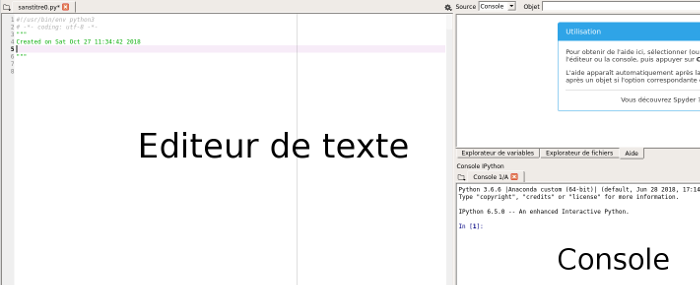

Module Données structurées et leur traitement
traitement de données structurées
Après avoir vu différents types de données, nous allons maintenant, à l'aide du langage de programmation Python, apprendre à effectuer des traitements sur ces données.
Activité 18.1
Ouvrez le logiciel Spyder

Dans un Spyder vous pouvez saisir du code (partie "Editeur de texte") mais aussi, saisir des commandes (nous verrons ce concept de commande plus loin) dans la partie "Console".
Pour traiter des données, nous allons utiliser la bibliothèque Python Pandas. Une bibliothèque Python permet de rajouter des fonctionnalités par rapport au langage de base. La bibliothèque Pandas est donc très utilisée pour tout ce qui touche au traitement des données.
Pour nos premiers pas avec Pandas, nous allons utiliser des données très simples au format CSV : ces données sont contenues dans le fichier ident_virgule.csv.
Activité 18.2
Après avoir téléchargé le fichier ident_virgule.csv, placez-le dans le dossier de votre choix (par exemple dans un dossier nommé "act_pandas")
Activité 18.3
Dans la partie "Editeur de texte" de Spyder, saisissez le code Python suivant :
import pandas
iden=pandas.read_csv("ident_virgule.csv")
Une fois le code saisi, enregistrer le fichier contenant ce code dans le même répertoire que le fichier "ident_virgule.csv"
Le code ci-dessus est très simple :
- Avec la première ligne, nous importons la bibliothèque pandas afin de pouvoir l'utiliser
- À la deuxième ligne, nous créons une variable "iden" qui va contenir les données présentes dans le fichier "ident_virgule.csv"
Activité 18.4
Dans spyder cliquez sur le triangle vert qui permet d'exécuter le programme que vous venez de saisir. Placez ensuite le curseur de la souris dans la console de spyder juste à côté d'un "In [X]" (avec X égal à 1, 2, 3..., selon les cas, dans l'exemple ci-dessous nous avons "In [3]"). Tapez alors "iden"
Vous devriez voir apparaitre les données contenues dans la variable "iden" rangées sous la forme d'un tableau, un peu comme ce que nous obtenions en ouvrant le fichier "ident_virgule.csv" avec un tableur.

Vous avez peut-être remarqué qu'une colonne a été ajoutée par rapport à ce que nous obtenions avec le tableur :

Les nombres présents dans cette colonne sont appelés des index. Chaque ligne du tableau a un index (première ligne : index 0, deuxième ligne index 1...)
ATTENTION : les index commencent à 0 et pas à 1
Les colonnes possèdes également des index, dans notre exemple ces index correspondent au "nom" (index de la première colonne), au "prenom" (index de la deuxième colonne) et à "date_naissance" (index de la troisième colonne)
**En résuméùù : les lignes possèdent des index (0,1,2..), les colonnes possèdent aussi des index ("nom", "prenom",...)
Il est possible de récupérer certaines données du tableau, par exemple, certaines lignes, certaines colonnes ou bien encore des valeurs uniques. Pour cela, il suffit d'utiliser l'instruction "loc" avec les index des lignes et les index des colonnes. Le principe de fonctionnement de "loc" est relativement simple puisque l'on aura une instruction de la forme loc[index_ligne,index_colonne]
Activité 18.5
Testez le programme suivant :
import pandas
iden=pandas.read_csv("ident_virgule.csv")
info=iden.loc[1,'prenom']
Vérifiez que la variable "info" contient bien le prénom "christophe"
Activité 18.6
Modifiez le programme de l'activité 5 pour que la variable info contienne "12/06/1978"
Il est possible de récupérer toutes les colonnes d'une ligne particulière, cette fois en remplaçant la partie "index_colonne" de "loc" par ":"
Activité 18.7
Testez le programme suivant :
import pandas
iden=pandas.read_csv("ident_virgule.csv")
info=iden.loc[:,'nom']
Il est possible de récupérer toutes les colonnes d'une ligne particulière, cette fois en remplaçant la partie "index_colonne" de "loc" par ":"
Activité 18.8
Testez le programme suivant :
import pandas
iden=pandas.read_csv("ident_virgule.csv")
info=iden.loc[2,:]
Il est aussi possible de récupérer seulement certaines lignes et certaines colonnes en utilisant la notation suivante :
loc[[index_ligne_1,index_ligne_2,...],[index_colonne_1,index_colonne_2,...]]
Activité 18.9
Testez le programme suivant :
import pandas
iden=pandas.read_csv("ident_virgule.csv")
info=iden.loc[[0,1],['nom','date_naissance']]
Vérifiez que la variable "info" contient bien un tableau avec uniquement les colonnes "nom" et "date_naissance" de la première ligne (index 0) et de la deuxième ligne (index 1).
Afin d'avoir des exemples plus complexes à traiter, dans la suite, nous allons travailler sur les données contenues dans le fichier ville_virgule.csv.
Activité 18.10
Testez le programme suivant :
import pandas
info_villes=pandas.read_csv("villes_virgule.csv")
Vérifiez que la variable "info_villes" contient bien les données contenues dans le fichier ville_virgule.csv
Comme vous pouvez le constater, il manque des données dans le tableau qui s'affiche dans la console spyder (les données manquantes sont symbolisées par des ...), en effet, le tableau contient trop données pour qu'il soit entièrement affiché dans la console spyder. Heureusement, il existe une solution :
Dans spyder, dans la fenêtre située juste au-dessus de la console, vous allez trouver un onglet "Explorateur de variables". Cliquez sur cet onglet, vous devriez alors obtenir ceci :

Double-cliquez sur "info_villes" et vous devriez alors voir apparaitre une nouvelle fenêtre qui contiendra un tableau avec l'ensemble des données.
En explorant le tableau, vous devriez, notamment dans les colonnes l'altitude mini et maxi, voir apparaitre un étrange "nan" pour les dernières villes du tableau. "nan" signifie "not a number", ici, cela veut tout simplement dire que certaines données sont manquantes.
Nous allons maintenant introduire des conditions dans la sélection des villes. Imaginez par exemple que vous désirez obtenir un tableau contenant toutes les villes qui ont une altitude minimum supérieure à 1500 m :
Activité 18.11
Analysez et testez le programme suivant :
import pandas
info_villes=pandas.read_csv("villes_virgule.csv")
nom_alt=info_villes.loc[info_villes["alt_min"]>1500,["nom","alt_min"]]
Dans le "loc", l'expression "info_villes["alt_min"]>1500" est bien avant la virgule, elle concerne donc les index des lignes du tableau. On sélectionnera uniquement les lignes qui auront la valeur du descripteur "alt_min" supérieure à 1500. Nous allons donc bien sélectionner les villes qui ont une altitude minimum supérieure à 1500 m
Activité 18.12
En vous inspirant de ce qui a été fait au "À faire vous-même 11", écrivez un programme qui permettra d'avoir les villes qui ont une densité d'habitant inférieure à 50 (dans le tableau ainsi créé, on aura 3 colonnes : le nom de la ville, la densité de la population et l'altitude minimum)
Il est possible de combiner plusieurs facteurs de sélection en utilisant un "et"("&") ou un "ou"("|").
Activité 18.13
Analysez et testez le programme suivant :
import pandas
info_villes=pandas.read_csv("villes_virgule.csv")
nom_alt=info_villes.loc[(info_villes["alt_min"]>1500) & (info_villes["dens"]>50),["nom","dens","alt_min"]]
Vous devriez constater qu'il y a, en France, une seule ville avec une densité de population supérieure à 50 et une altitude minimum supérieure à 1500 m.
Il est aussi possible d'effectuer des calculs sur des colonnes, par exemple des moyennes. Il suffit d'utiliser l'instruction "mean" pour effectuer une moyenne :
Activité 18.14
Analysez et testez le programme suivant :
import pandas
info_villes=pandas.read_csv("villes_virgule.csv")
moyenne_alt_min=info_villes.loc[:,"alt_min"].mean()
Vous devriez constater que l'altitude minimum moyenne est de 193 m en France. Je rappelle que dans loc[:,"alt_min"] le ":" signifie que l'on considère toutes les lignes du tableau. De plus le "alt_min" que le calcul de la moyenne porte bien sur les données du descripteur "alt_min".
Activité 18.15
Écrivez un programme permettant de calculer le nombre moyen d'habitants en 2012
Pour l'instant nous avons calculé une moyenne sur l'ensemble des lignes, il est aussi possible d'imposer une condition sur les lignes qui seront utilisées pour le calcul.
Activité 18.16
Analysez et testez le programme suivant :
import pandas
info_villes=pandas.read_csv("villes_virgule.csv")
nbe_hab=info_villes.loc[info_villes["alt_min"]>1500,"nb_hab_2012"].mean()
print(nbe_hab)
Vous devriez constater que les villes ayant une altitude minimum supérieure à 1500 m avaient en moyenne 350 habitants en 2012.
Il est aussi possible de trier le tableau en fonction des valeurs d'un descripteur. Il suffit d'utiliser l'instruction "sort_values"
Activité 18.17
Analysez et testez le programme suivant :
import pandas
info_villes=pandas.read_csv("villes_virgule.csv")
tri_alt_min=info_villes.sort_values(by=["alt_min"])
Vous devriez obtenir un nouveau tableau de données "tri_alt_min" trié dans l'ordre croissant des altitudes minimums. Quelle est la ville ayant l'altitude minimum la plus faible de France ?
Il est aussi possible de trier par ordre décroissant en ajoutant "ascending=False" :
Activité 18.18
Analysez et testez le programme suivant :
import pandas
info_villes=pandas.read_csv("villes_virgule.csv")
tri_alt_min=info_villes.sort_values(by=["alt_min"], ascending=False)
Quelle est la ville ayant l'altitude minimum la plus importante de France ?
Activité 18.19
Écrivez un programme permettant de répondre à la question suivante : quelle est la ville ayant la densité de population la plus forte ?